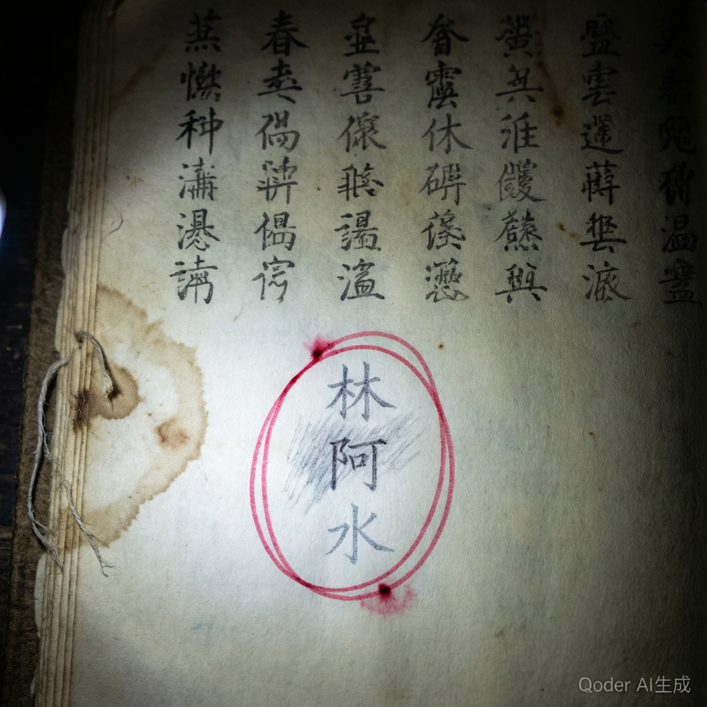

| 年份 | 姓名 | 备注 |
|---|---|---|
| 洪武二十年 | 林潮生 | 始记。自愿。 |
| 永乐十八年 | 陈阿珠 | 渔女。无抗拒。 |
| 正统十年 | 吴海生 | —— |
| 成化十六年 | 林月娥 | 林氏。与始记同姓。 |
| 嘉靖八年 | 陈大勇 | —— |
| 万历四年 | 吴秋月 | —— |
| 崇祯十二年 | 林阿海 | —— |
| 康熙二十年 | 陈秀英 | —— |
| 乾隆四十年 | 吴水根 | —— |
| 道光十六年 | 林阿莲 | —— |
| 光绪二年 | 陈海生 | —— |
| 年份 | 姓名 | 备注 |
|---|---|---|
| 1924年 | 林阿水 | 同名。巧合？ |
| 1944年 | 吴秋月 | —— |
| 1964年 | 陈水根 | —— |
| 1984年 | 林秀珠 | —— |
| 1999年 | 林阿琴 | 不收。仪式中止。 |
| 2004年 | （赤潮） | 二十三人失踪。簿上无名。 |
